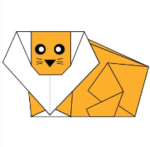
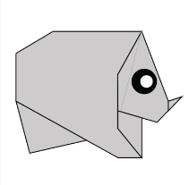
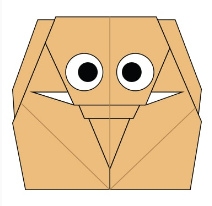
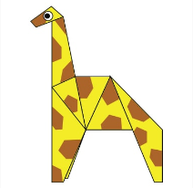

Camel
- Camel's ears are furry
- Camel can move easily across the sand because of its specially designed feet
- When they find water, they will drink as much as possible.

Chameleons
- Chameleons are reptiles that are part of the iguana suborder
- Changing skin color is an important part of communication among chameleons
- Most chameleons have a prehensile tail that they use to wrap around tree branches

Pigeons
- Pigeons are incredibly complex and intelligent animals
- Pigeons are renowned for their outstanding navigational abilities
- Pigeons have excellent hearing abilities.

Teddy Bear
- The Teddy Bears’ Picnic song was originally called The Teddy Bear Two Step
- Winnie the Pooh was based on a real bear

Panda
- Giant pandas are good at climbing trees and can also swim
- Pandas go from pink to white and black (or brown)
- Pandas are "lazy" — eating and sleeping make their day

Frog
- One gram of the toxin produced by the skin of the golden poison dart frog could kill 100,000 people.
- There is a frog in Indonesia that has no lungs – it breathes entirely through its skin.

Cicada
- All cicada species in North America came from a common ancestor
- cicada species switches from being on a 13-year cycle to a 17-year cycle

Dogs
- Dogs noses are wet to help absorb scent chemicals
- The Beatles song ‘A Day in the Life’ has a frequency only dogs can hear
- A blind man and his guide dog hiked the Appalachian Trail

Lions
- The lion is a well-muscled cat with a long body, large head, and short legs.
- Lions are family animals and truly social in their own communities.
- A female lion needs 5kg of meat a day. A male needs 7kg or more a day.

Rhinos
- These incredible creatures are some of the biggest animals in world!
- Despite their huge size and strength, these bulky beasts don’t prey on other animals for food.
- They’re herbivores, and instead like to munch on lots of grass and plants at night, dawn and dusk.

Elephants
- Elephants are mammals of the family Elephantidae and the largest existing land animals.
- Three species are currently recognised: the African bush elephant, the African forest elephant, and the Asian elephant.
- They can live up to 70 years in the wild.

Girrafes
- The giraffe’s long neck can stretch more than 7 feet in length.
- Like humans, the giraffes have 7 vertebrae the neck.
- The giraffe’s neck makes up almost half of its overall height.